A step-by-step guidance platform for first-time international students arriving in the UK — replacing 12+ scattered pages with one calm, structured journey.
International students arriving in the UK for the first time face a series of critical steps — passport control, biometric verification, baggage, customs, transport — in rapid succession, in an unfamiliar environment, often after a 10+ hour flight. The information exists, but it is scattered across 12+ government, university, and airline websites.
Students land in a high-stress situation without a single reliable source of truth. Calm Air was designed to fix this — a 9-level progressive guidance platform that walks students through every step of UK airport arrival, one screen at a time.
The insight came directly from personal experience arriving in the UK as an international student. The formal guidance was scattered, inconsistent, and assumed prior knowledge. The unofficial guidance — YouTube videos, Reddit threads, university Facebook groups — was helpful but unreliable and hard to navigate under pressure.
The real gap was not missing information. It was missing structure. Students needed a guided sequence, not a search engine. Calm Air provides that structure — progressive disclosure at each stage, showing only what is relevant right now.
The IA is a linear nine-level hierarchy mapping the exact physical journey through a UK airport — from landing gate to exit. Each level corresponds to one real-world location or checkpoint. Users cannot skip levels, ensuring they never arrive at a checkpoint unprepared.
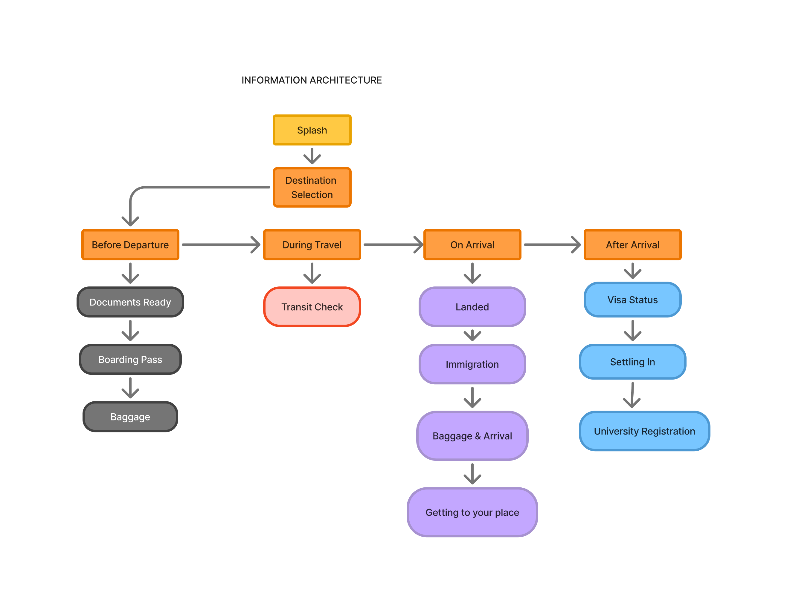
The main flow maps the student from document prep through all nine physical checkpoints to final exit. Each level unlocks only when the previous level is marked complete — enforcing the linear journey that mirrors the real airport process.
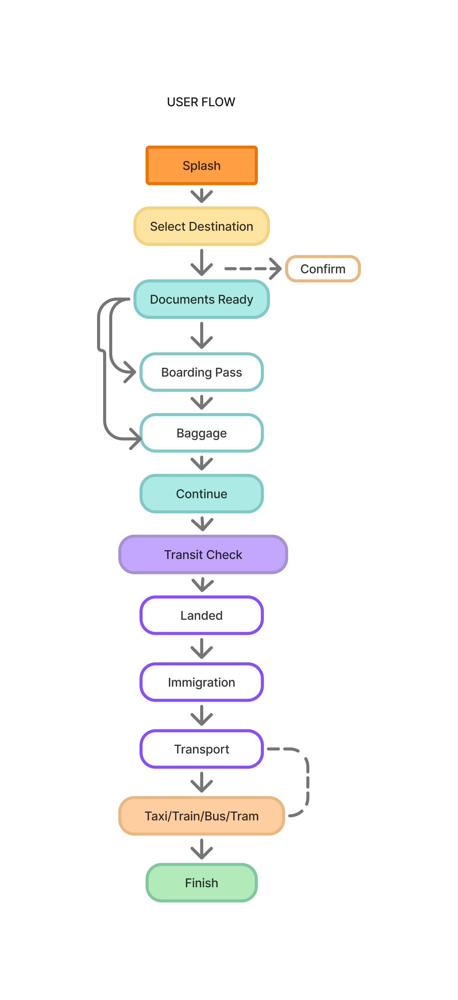
Four screens show the evolution from structural wireframes to high-fidelity desktop UI. The layout decisions — progressive disclosure, step indicators, single-action panels — were locked in at wireframe stage before visual design began.
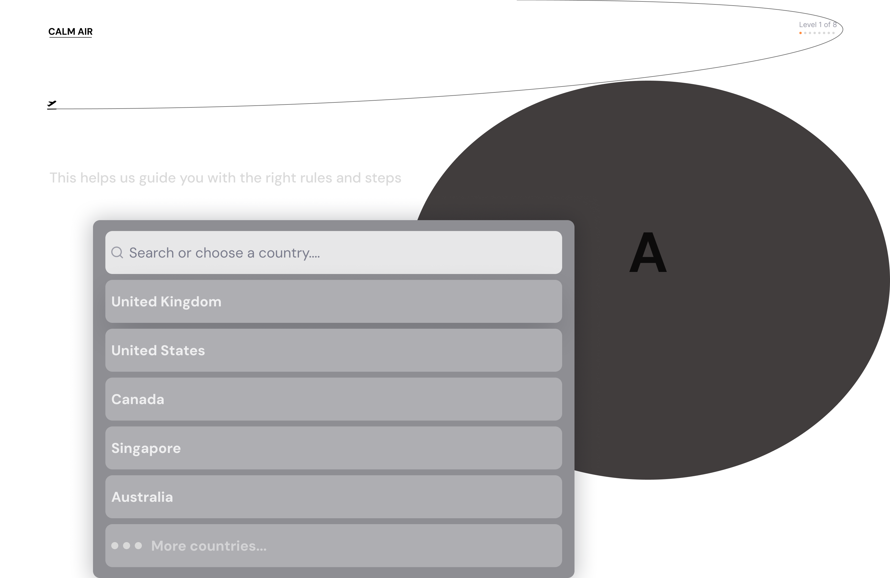
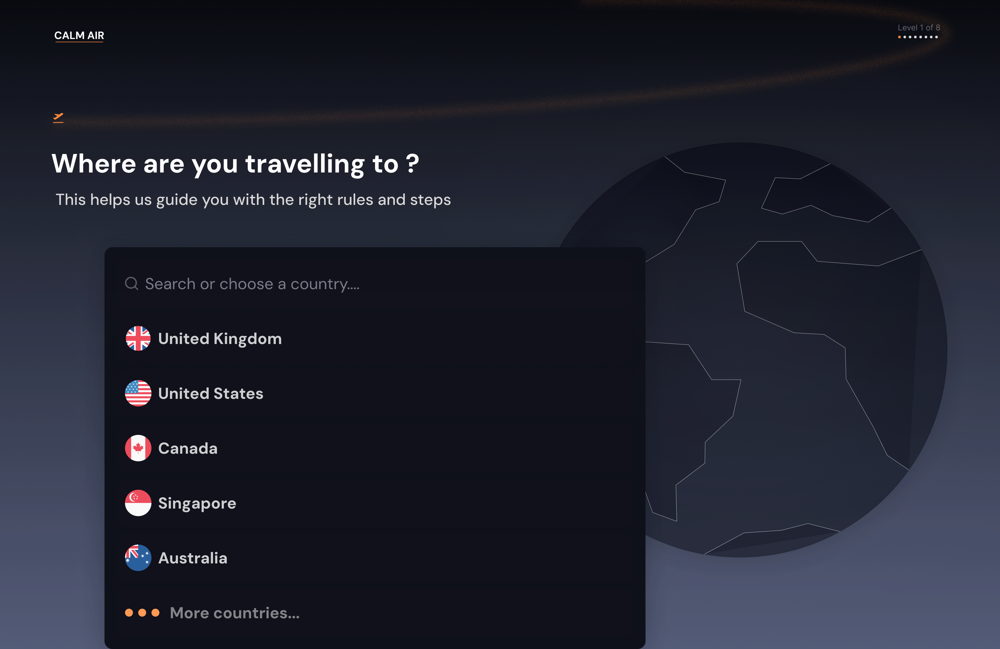
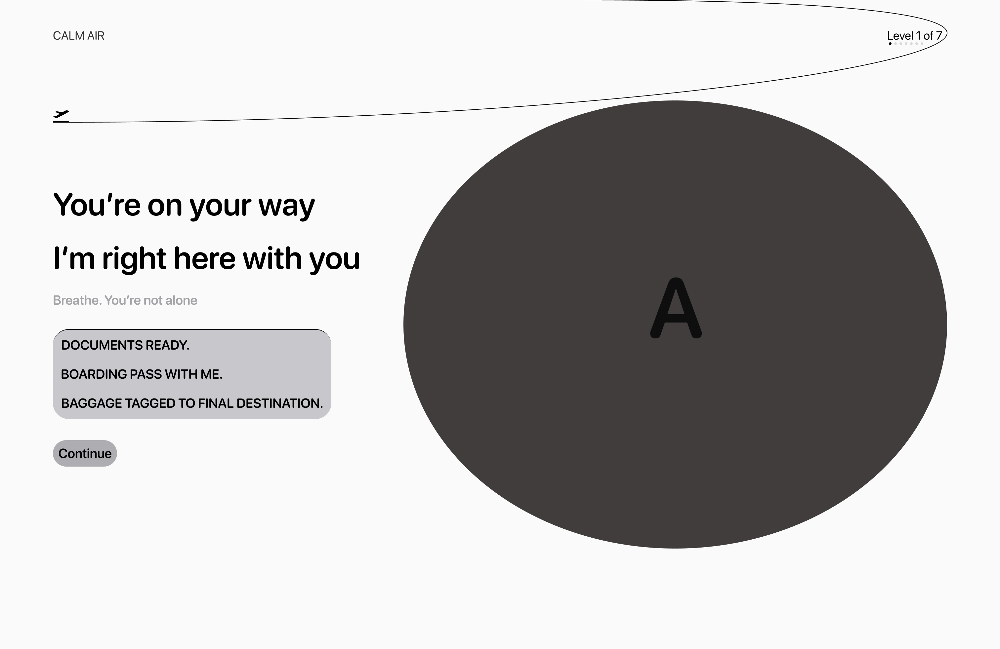
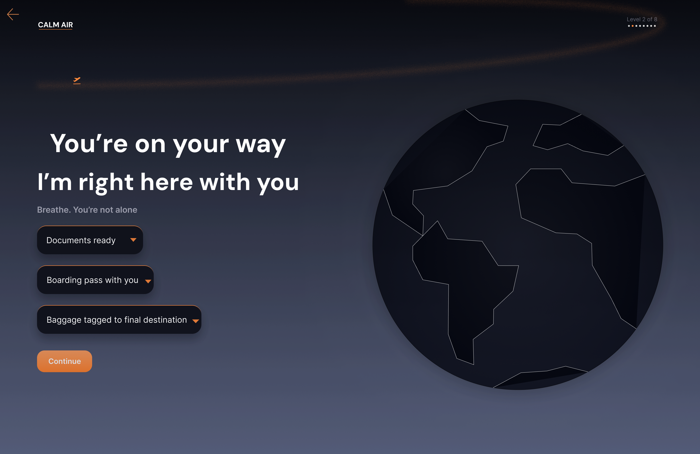
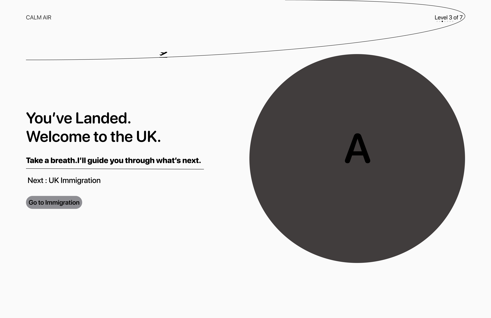
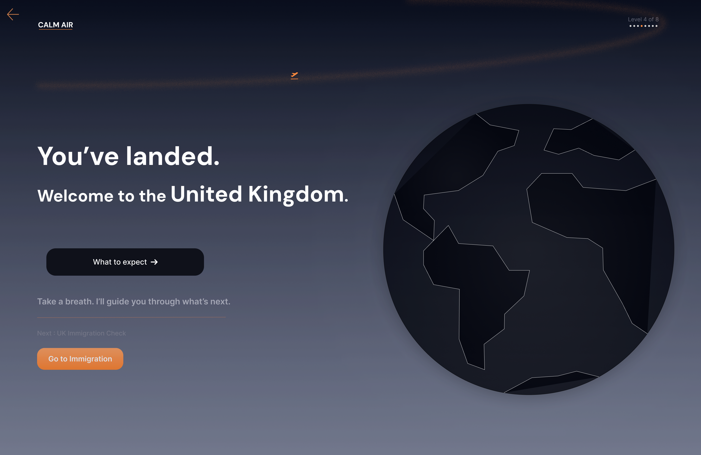
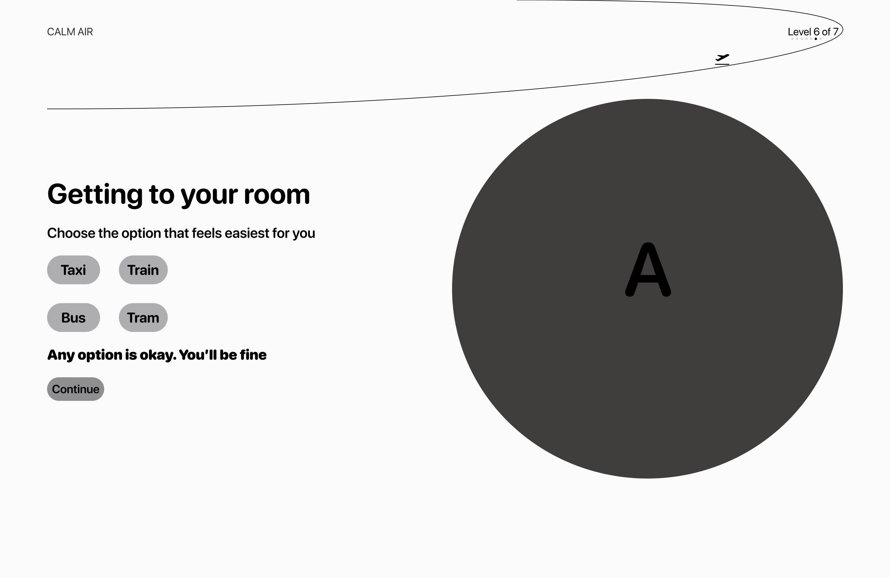
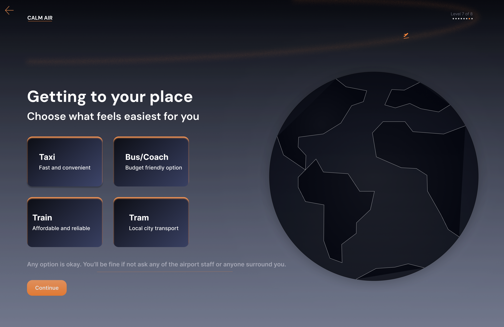
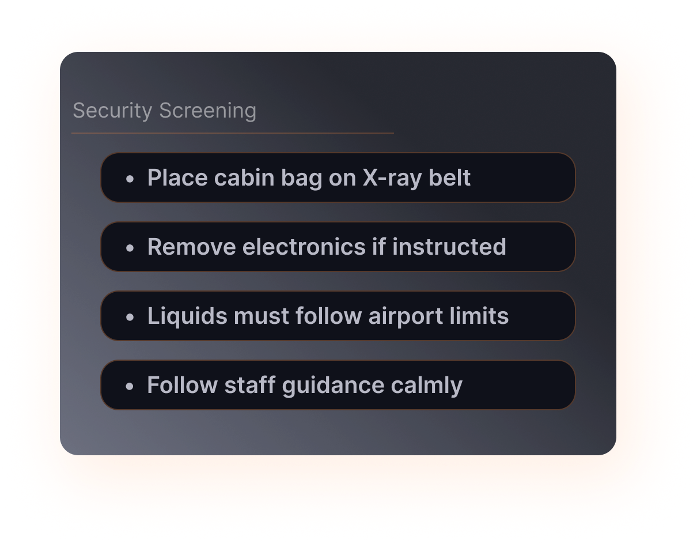
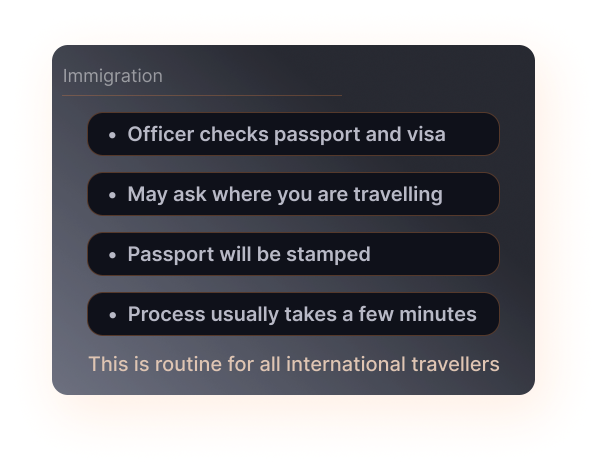
Calm Air taught me that structure itself is a form of care. When a product removes uncertainty at a stressful moment, the user feels supported — even if the design is invisible.
The hardest design decision was what to exclude. Every level could have included more information. The discipline was in showing the minimum viable guidance at each step.